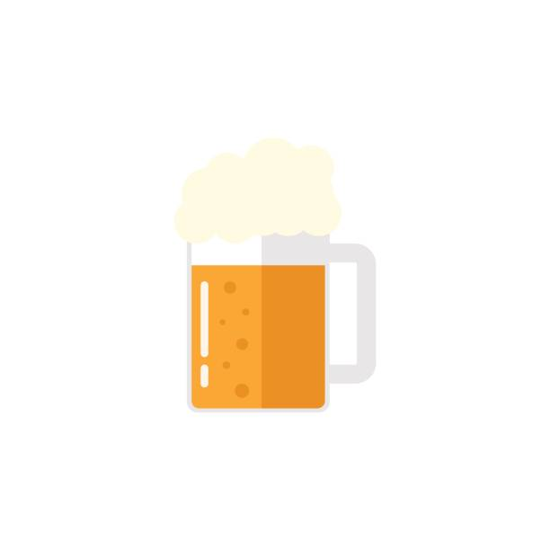

We are BeerCo, a small local brewery in Ukraine that produces quality craft beer. Our team of experienced brewers carefully crafts each batch using only the finest local ingredients, resulting in a range of flavorful and aromatic brews. From crisp pilsners to rich stouts, there's something to suit all tastes. Come visit us and enjoy a warm and welcoming atmosphere, perfect for relaxing and savoring the flavors of Ukraine's thriving craft beer scene. Step off the beaten path and discover the true taste of Ukraine with BeerCo.
